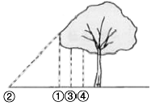
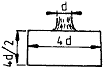
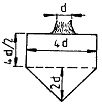
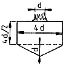
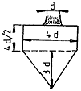

조경기능사 (2008-03-30 기출문제)
1과목: 조경일반
1. 눈으로 덮여 있는 설경과 동물의 일시적인 출현은 다음 경관의 어떤 유형에 해당되는가?
- 전경관(panoramic landscape)
- 지형경관(feature landscape)
- 관개경관(canopied landscape)
- 일시경관(ephemeral landscape)
(정답률: 96%)

2. 정원양식의 형성에 영향을 미치는 사회적인 조건에 해당되지 않는 것은?
- 국민성
- 자연지형
- 역사, 문화
- 과학기술
(정답률: 55%)
3. 토양의 무기질입자의 단위조성에 의한 토양의 분류를 토성(土性)이라고 한다. 다음 중 토성을 결정하는 요소가 아닌 것은?
- 자갈
- 모래
- 미사
- 점토
(정답률: 66%)
4. 조경분양의 프로젝트를 수행하는 단계별로 구분할 때, 자료의 수집, 분석, 종합의 내용과 가장 밀접하게 관련이 있는 것은?
- 계획
- 설계
- 내역서 산출
- 시방서 작성
(정답률: 88%)
5. 물가에 세워진 임해전(臨海殿), 봉래산을 본따서 축소한 연못, 삼신산을 암시하는 3개의 섬 등과 관련 있는 것은?
- 궁남지
- 안압지
- 부용지
- 부용동정원
(정답률: 89%)
6. 어느 레크레이션 활동에서의 과거 참가사례가 앞으로도 레크레이션 기회를 결정하도록 계획하는 방법, 즉 공급이 수요를 만들어 내는 방법은?
- 자원접근방법
- 활동접근방법
- 경제접근방법
- 행태접근방법
(정답률: 65%)
7. 일반적으로 조경업의 직업진로 중 조경설계기술자의 직무 내용이 아닌 것은?
- 도면제도
- 기본계획수립
- 시방서 작성
- 시설물공사시공
(정답률: 89%)
8. 영국 튜터 왕조에서 유행했던 화단으로 낮게 깍은 회양목 등으로 화단을 여러 가지 기하학적 문양으로 구획 짓는 것은?
- 기식화단
- 매듭화단
- 카펫화단
- 경재화단
(정답률: 87%)
9. 바람과 관련된 사항 중 거리가 가장 먼 것은?
- 병충해 전파
- 수형 조절
- 착색 촉진
- 온도 조절
(정답률: 70%)
10. 우리나라의 겨울철 좋은 생활 환경과 수목의 생육을 위해 최소 얼마 정도의 광선이 필요한가?
- 2시간 정도
- 4시간 정도
- 6시간 정도
- 10시간 정도
(정답률: 78%)
11. 다음 미기후(micro-climate)에 관한 설명 중 적합하지 않은 것은?
- 지형은 미기후의 주요 결정 요소가 된다.
- 그 지역 주민에 의해 지난 수년 동안의 자료를 얻을 수 있다.
- 일반적으로 지역적인 기후 자료보다 미기후 자료를 얻기가 쉽다.
- 미기후는 세부적인 토지이용에 커다란 영향을 미치게 된다.
(정답률: 93%)
12. 다음 중 Nicholas Fouguet 가 소유하였고, 앙드레 르 노트르의 출세작으로 알려진 정원은?
- 베르사이유정원
- 보르비꽁뜨정원
- 비큰히드파크
- 센트랄파크
(정답률: 80%)
13. 중국 소주의 4대 명원에 해당되지 않는 것은?
- 졸정원(拙庭園)
- 창랑정(滄浪亭)
- 사자림(獅子林)
- 원명원(圓明園)
(정답률: 65%)
14. “자연은 직선을 싫어한다”라는 신조에 따라 직선적인 원로와 수로, 산울타리 등을 배척하고 불규칙적인 생김새의 정원을 꾸민 사람은?
- 런던(London)
- 브리지맨(Bridgeman)
- 윌리암 캔트(William Kent)
- 험프리 랩턴(Humphrey Repton)
(정답률: 83%)
15. 도면에서의 치수 표시방법으로 맞는 것은?
- 기본단위는 원칙적으로 cm로 한다.
- 치수선은 치수 보조선에 수평이 되도록 한다.
- 치수 기입은 치수선에 평행하게 도면의 오른쪽에서 왼쪽으로 읽어 나간다.
- 치수 수치는 공간이 부족할 경우 한 쪽의 기호를 넘어서 연장하는 치수선의 위쪽에 기입할 수 있다.
(정답률: 55%)
2과목: 조경재료
16. 덩굴성 식물만 짝지어진 것은?
- 으름, 수국
- 등나무, 금목서
- 송악, 담쟁이덩굴
- 치자나무, 멀꿀
(정답률: 94%)
17. 다음 중 음수에 해당하는 수종은?
- 낙엽송
- 무궁화
- 식나무
- 해송
(정답률: 74%)
18. 다음 중 콘크리트의 보강용으로 이용되는 것은?
- 컬러 철선
- 와이어 로프
- 볼트와 너트
- 용접철망
(정답률: 79%)
19. 다음 중 일반적인 콘크리트의 특징이 아닌 것은?
- 모양을 임의대로 만들 수 있다.
- 임의대로 강도를 얻을 수 있다.
- 내화, 내구성이 강한 구조물을 만들 수 있다.
- 경화시 수축균열이 발생하지 않는다.
(정답률: 79%)
20. 합판(合板)에 관한 설명으로 틀린 것은?
- 보통합판은 얇은 판을 2, 4, 6매 등의 짝수로 교차하도록 접착제로 접합한 것이다.
- 특수합판은 사용목적에 따라 여러 종류가 있으나 형식 적으로는 보통합판과 다르지 않다.
- 합판은 함수율 변화에 의한 신축변형이 적고, 방향성이 없다.
- 합판의 단판 제법에는 로터리베니어, 소드베니어, 슬라이스드베니어 등이 있다.
(정답률: 75%)
21. 석재의 성인에 의해 암석학적 분류는 화성암, 수성암, 변성암 등으로 분류한다. 다음 중 변성암에 해당되는 석재는?
- 화강암
- 사암
- 안산암
- 대리석
(정답률: 77%)
22. 땅속줄기가 옆으로 뻗으면서 죽순이 나와서 높이 2 ~ 20m, 지름 2 ~ 5cm 자리며 속이 비어 있다. 줄기가 첫해에는 녹색이고, 2년째부터 검은 자색이 짙어져 간다. 잎은 비소 모양이고 잔톱니가 있으며 어깨털은 5개 내외로 곧 떨어지는 ‘반죽’이라고 불리는 수종은?
- 왕대
- 조릿대
- 오죽
- 맹종죽
(정답률: 74%)
23. 산울타리용 수종의 조건이라고 할 수 없는 것은?
- 성질이 강하고 아름다울 것
- 적당한 높이의 아랫가지가 쉽게 마를 것
- 가급적 상록수로서 잎과 가지가 치밀할 것
- 맹아력이 커서 다듬기 작업에 잘 견딜 것
(정답률: 87%)
24. 다음 중 붉은색의 단풍이 드는 수목들로만 구성된 것은?
- 낙우송, 느티나무, 백합나무
- 칠엽수, 참느릅나무, 졸참나무
- 감나무, 화살나무, 붉나무
- 잎갈나무, 메타세콰이어, 은행나무
(정답률: 88%)
25. 봄 화단용에 쓰이는 식물이 아닌 것은?
- 팬지
- 데이지
- 금잔화
- 샐비어
(정답률: 63%)
26. 다음 중 목재의 건조에 관한 설명으로 틀린 것은?
- 건조기간은 자연건조시는 인공건조에 비해 길고, 수종에 따라 차이가 있다.
- 인공건조 방법에는 열기법, 자비법, 증기법, 전기법, 진공법, 건조제법 등이 있다.
- 동일한 자연건조시 두께 3cm의 침엽수는 약 2 ~ 6개월 정도 걸리고, 활엽수는 그 보다 짧게 걸린다.
- 구조용재는 기건상태, 즉 함수율 15% 이하로 하는 것이 좋다.
(정답률: 79%)
27. 다음 표장재료 중 광장 등 넓은 지역에 포장하며, 바닥에 색채 및 자연스런 문양을 다양하게 할 수 있는 소재는?
- 벽돌
- 우레탄
- 자기타일
- 고압블럭
(정답률: 73%)
28. 조경용으로 사용되는 다음 석재 중 압축강도가 가장 큰 것은?
- 화강암
- 응회암
- 안산암
- 사문암
(정답률: 84%)
29. 다음 중 시공현장에서 사용되는 긴결(연결) 철물에 해당되는 것은?
- 못
- 강판
- 함석
- 형강
(정답률: 73%)
30. 가격이 싸므로 가장 일반적으로 널리 사용되는 시멘트는?
- 보통 포틀랜드 시멘트
- 중용열 포틀랜드 시멘트
- 조강 포틀랜드 시멘트
- 플라이애시 시멘트
(정답률: 89%)
31. 겨울철 흰눙을 배경으로 줄기를 감상하려고 한다. 다음 중 어느 나무가 가장 적당한가?
- 백송
- 자작나무
- 플라타너스
- 흰 말채나무
(정답률: 59%)
32. 다음 중 임해공업단지에 공장조경을 하려 할 때 가장 적합한 수종은?
- 광나무
- 히말라야시다
- 감나무
- 왕벗나무
(정답률: 70%)
33. 다음 중 분말 도료를 스프레이로 뿜어서 칠하는 도장장법으로 도막 형성 때 주름현상, 흐름 현상 등이 없어 점도 조절이 필요 없으며 도장작업이 간편한 무정전 스프레이법이 대표적인 도장은?
- 분체도장
- 소부도장
- 침적도장
- 합성수지 피막도장
(정답률: 77%)
34. 다음 중 벽돌의 마름질에 따른 분류 명칭이 아닌 것은?
- , 반절벽돌
- 칠오토막벽돌
- 온장벽돌
- 인방벽돌
(정답률: 76%)
35. 다음 수종 중 질감이 가장 거친 것은?
- 칠엽수
- 소나무
- 회양목
- 영산홍
(정답률: 67%)
3과목: 조경 시공 및 관리
36. 일반 콘크리트는 타설 뒤 몇 주일 정도 지나야 콘크리트가 지니게 될 강도의 80% 정도에 해당 되는가?
- 1주일
- 2주일
- 3주일
- 4주일
(정답률: 73%)
37. 낙엽활엽교목이며, 천근성으로 바람에 의해 잘 넘어지고 천정시 수형의 미가 깨지기 쉬우므로 주의해야 하는 조경 수목은?
- 향나무
- 쥐똥나무
- 수양버들
- 주목
(정답률: 78%)
38. 다음 중 경관석 놓기에 대한 설명으로 틀린 것은?
- 경관석 놓기는 시각적으로 중요한 곳이나 추상적인 경관을 연출하기 위하여 이용된다.
- 경관석 놓기는 2, 4, 6, 8과 같이 짝수로 무리지어 놓은 것이 자연스럽다.
- 가장 중심이 되는 자리에 가장 크고 기품이 있는 경관석을 중심으로 배치한다.
- 전체적으로 볼 때 힘의 방향이 분산되지 않아야 한다.
(정답률: 90%)
39. 파낸 흙을 쌓아올렸을 때 중요한 ‘안식각’에 대한 설명으로 부적합한 것은?
- 흑을 높게 쌓아올렸을 때 잠시 동안은 모아 둔 그대로 형태가 유지되는 것은 흙의 점착력 때문이다.
- 높이 쌓아놓은 뒤 시간이 지나면서 허물어져 내리고 안정된 비탈면을 형성했을 때 수평면에 대하여 비탈면이 이루는 각을 안식각이라 한다.
- 흙깍기 또는 흙쌓기는 안정된 비탈을 위해서는 그 토질의 안식각보다 작은 경사각을 가지게 하는 것이 중요하다.
- 토질이 건조 했을 때 안식각이 큰 것부터의 순서는 점토 > 보통흙 > 모래 > 자갈의 순이다.
(정답률: 65%)
40. 다음 중 조경공사의 일반적이 순서를 바르게 나타낸 것은?
- 부지지반조성 → 조경시설물설치 → 지하매설물설치 → 수목식재
- 부지지반조성 → 지하매설물설치 → 수목식재 → 조경시설물설치
- 부지지반조성 → 수목식재 → 지하매설물설치 → 조경시설물설치
- 부지지반조성 → 지하매설물설치 → 조경시설물설치 → 수목식재
(정답률: 82%)
41. 일반적으로 상단이 좁고 하단이 넓은 형태의 옹벽으로 자중(自重)으로 토압이 저항하며, 높이 4m 내외의 낮은 옹벽에 많이 쓰이는 종류는?
- 중력식 옹벽
- 캔틸레버 옹벽
- 부축벽 옹벽
- 조립식 옹벽
(정답률: 84%)
42. 식물생육에 특히 많이 흡수, 이용되는 거름의 3요소가 아닌 것은?
- N
- P
- Ca
- K
(정답률: 85%)
43. 조경수목의 연간 관리 작업 계획표를 작성하려고 한다. 작업 내용의 분류상 성격이 다른 하나는?
- 병ㆍ해충 방재
- 시비
- 뗏밥 주기
- 수관 손질
(정답률: 54%)
44. 일반적으로 움트는 힘이 강하기 때문에 상당히 큰 가지를 잘라도 훌륭한 새 가지가 나오는 수종은?
- 소나무
- 양벗즘나무
- 향나무
- 능수벚나무
(정답률: 67%)
45. 조경공간에서의 휴지통에 대한 설명 중 틀린 것은?
- 통풍이 좋고 건조하기 쉬운 구조로 한다.
- 내화성이 있는 구조로 한다.
- 쓰레기를 수거하기 쉽도록 한다.
- 지저분하므로 눈에 잘 띄지 않는 장소에 설치한다.
(정답률: 86%)
46. 조경수목에 사용되는 농약과 관련된 내용으로 부적합한 것은?
- 농약은 다른 용기에 옮겨 보관하지 않는다.
- 살포작업은 아침ㆍ저녁 서늘한 때를 피하여 한낮 뜨거운 때 살포한다.
- 살포작업 중에는 음식을 먹거나 담배를 피우면 안된다.
- 농약 살포작업은 한 사람이 2시간 이상 계속하지 않는다.
(정답률: 91%)
47. 조경에서 이상적인 시공을 설명한 것 중 가장 알맞은 것은?
- 설계도면과는 무관하게 임의로 적합한 시공을 하는데 있다.
- 설계에 의해서 정해진 방침에 따라 경제적, 능률적으로 목적을 달성하는데 있다.
- 경제적인 것은 관계없이 보기 좋게하면 된다.
- 재료를 최고급품으로 써서라도 목적을 달성하는데 있다.
(정답률: 87%)
48. 흰가루병을 방제하기 위하여 사요하는 약품으로 부적당한 것은?
- 티오파네이트메틸수화제(지오판엠)
- 결정석회황합제(유황합제)
- 디비이디시(황산구리)유제(산요루)
- 데메톤-에스-메틸유제(메타시르톡스)
(정답률: 50%)
49. 다음 중 좋은 상태의 수목을 고르는 요령으로 가장 거리가 먼 것은?
- 가지의 수가 지나치게 많이 않고, 여러 방향으로 고르게 배치된 것
- 뿌리의 발육이 좋고 곧은 뿌리보다 곁뿌리가 훨씬 많은 것
- 병ㆍ해충의 피배를 입은 흔적이 없고, 잔가지가 충실한 것
- 뿌리에 비해 가지가 훨씬 많은 것
(정답률: 79%)
50. 길이 100m, 높이 4m의 벽을 1.0B 두께로 쌓기 할 때 소요 되는 벽돌의 양은?(단, 벽돌은 표준형 190×90×57)이고, 할증은 무시하며 줄눈나비는 10mm를 기준으로 한다.)
- 약 30000장
- 약 52000장
- 약 59600장
- 약 48800장
(정답률: 66%)
51. 다음 그림 중 윤상거름주기를 할 때, 시비의 위치로 가장 적합한 곳은?

- ①
- ②
- ③
- ④
(정답률: 81%)
52. 정원수를 이식할 때 가지와 잎을 적당히 잘라 주는 이유로 다음중 어떤 목적에 해당하는가?
- 생장 조장을 돕는 가지 다듬기
- 생장을 억제하는 가지 다음기
- 세력을 갱신하는 가지 다듬기
- 생리 조정을 위한 가지 다듬기
(정답률: 60%)
53. 수종에 따라 차이가 있지만 다음 중 일반적으로 수목에 덧거름을 주는 시기로서 가장 적합한 시기는?
- 10월 하순 ~ 11월 하순
- 12월 하순 ~ 1월 하순
- 2월 하순 ~ 3월 하순
- 4월 하순 ~ 6월 하순
(정답률: 57%)
54. 다음 중 디딤돌 놓기에 관한 설명으로 가장 거리가 먼 것은?
- 일본식 정원에서만 쓰이는 수법이다.
- 쓰이는 돌은 납작하면서도 표면이 약간 둑한 것을 골라야 한다.
- 한발로 디디는 디딤돌의 크기는 지름 30cm 정도 되는 것을 사용한다.
- 돌의 표면이 지표보다 3 ~ 6cm 높게 하여 수평으로 놓는다.
(정답률: 80%)
55. 다음 측구들 중 산책로나 보도에서 자연경관과 가장 잘 어울리는 것은?
- 콘크리트 측구
- U형 측구
- 호박돌 측구
- L형 측구
(정답률: 67%)
56. 정원에 잔디를 식재하고자 할 때 요구되는 생육 최소 토심(生育最小土深)의 기준으로 가장 적합한 것은?
- 10cm
- 20cm
- 30cm
- 40cm
(정답률: 72%)
57. 수피가 얇아서 겨울에 얼어 터지는 것을 방지하기 위해 새끼 감기를 해 주는 것이 다른 수종들 보다 좋은 수종들로만 짝지어진 것은?
- 단풍나무, 배롱나무
- 은행나무, 매화나무
- 라일락, 층층나무
- 꽃아그배나무, 산딸나무
(정답률: 82%)
58. 식물 생장에 꼭 필요한 원소 중 질소가 결핍되었을 때 생기는 현상은?
- 신장 생장이 불량하거나 줄기나 가지가 가늘어지고 묵은 잎부터 황변하여 떨어진다.
- 잎이 비틀어지면 변색하고 결실이 좋지 못하며 뿌리의 생장이 저하된다.
- 옥신의 부족으로 절간생장이 억제되고 잎이 작아진다.
- 뿌리나 눈의 생장점이 붉게 변하여 죽고 건조나 추위의 해를 받기 쉽다.
(정답률: 76%)
59. 다음 중 비타면에 교목을 식재할 때 기울기는 어느 정도 보다 완만하여야 하는가?
- 1 : 1 정도
- 1 : 1.5 정도
- 1 : 2 정도
- 1 : 3 정도
(정답률: 73%)
60. 다음 뿌리분의 형태 중 보통분인 것은?(단, d : 뿌리의 근원지름이다.)




(정답률: 76%)